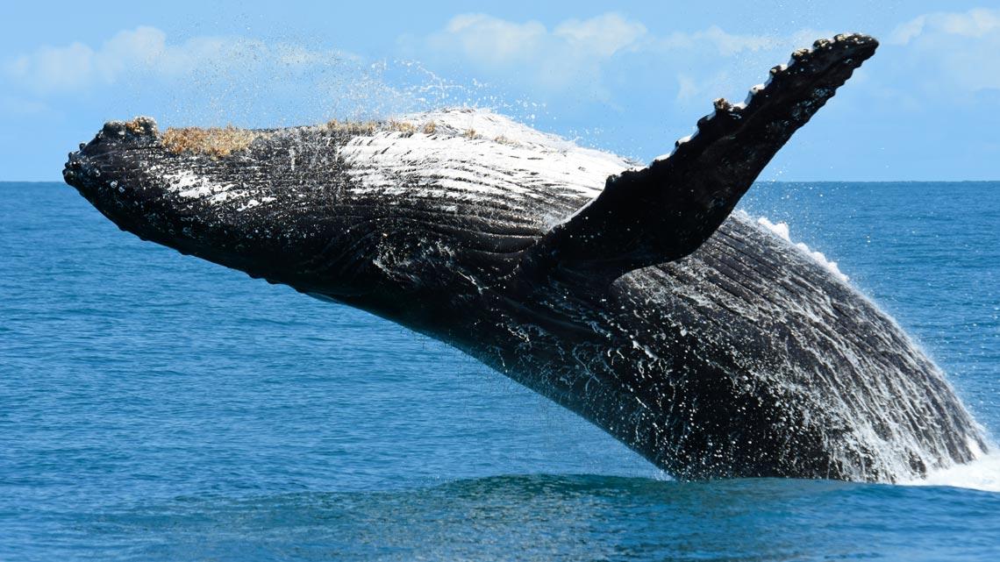
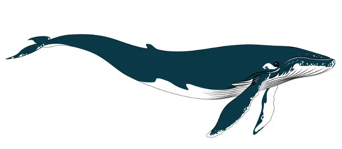

Cada espécie tem uma característica reprodutiva,
mas a maioria detém uma única estação reprodutiva ao ano,
e tem somente uma cria por vez!
Aprenda sobre a reprodução das baleias!
Baleia Jubarte
Os machos solitários, possuem como característica a emissão de sons que formam
canções complexas, as quais parecem estar ligadas ao seu acasalamento. Estas melodias duram entre 10 a 20
minutos e são compartilhadas pelos indivíduos de uma mesma população, mudando de composição gradualmente ano
após ano. Os machos também parecem competir diretamente pelas fêmeas, acompanhando e defendendo-as das
investidas de outros machos. As Baleias Jubarte realizam migrações reprodutivas para regiões tropicais a
partir dos 6-10 anos de idade, e sua gestação pode durar até 12 meses. Após o nascimento, os filhotes
alimentam-se do leite rico em gorduras da mãe (45-60%) por até um ano.

Baleia Azul
As baleias-azuis adquirem sua maturidade sexual por volta dos 10 anos de idade. A gestação desse animal
dura de 11 a 12 meses, e os filhotes, ao nascerem, já apresentam um tamanho impressionante de sete metros de
comprimento e mais de duas toneladas. A lactação dura entre seis e oito meses.

Beluga
As estimativas sobre a idade de maturidade sexual varia amplamente; a maioria dos autores estimam que os
machos atingem a maturidade sexual entre os quatro e os sete anos, e as fêmeas o fazem entre quatro e nove
anos de idade. A idade média do primeiro parto é de 8,5 anos e a fertilidade começa a diminuir aos vinte
e cinco, sem gestações registradas acima dos quarenta e um anos.
As fêmeas geralmente têm filhotes a cada dois a três anos. A maioria dos acasalamentos ocorrem entre
fevereiro e maio, mas alguns podem ocorrer em outras épocas do ano. Foram publicados dados de períodos de
gestação que varia entre 12 a 14½ meses, mas informações provenientes de fêmeas em cativeiro registra um
tempo mais prolongado, com uma duração média de 475 dias (15,8 meses).